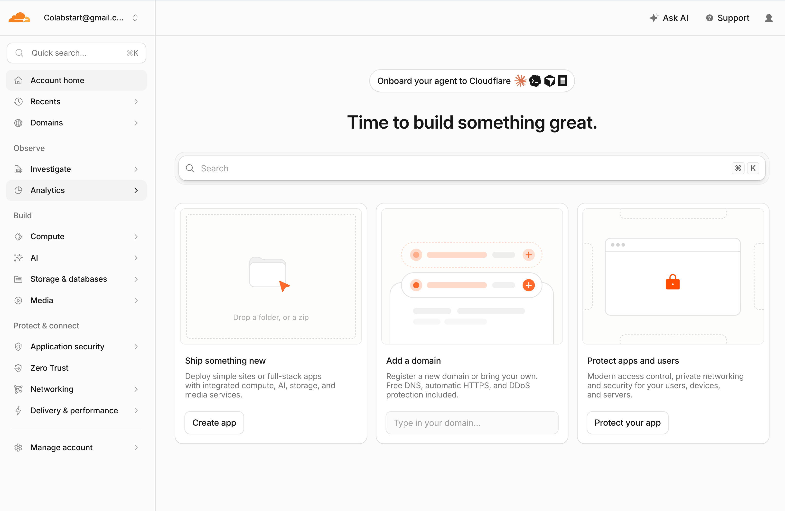
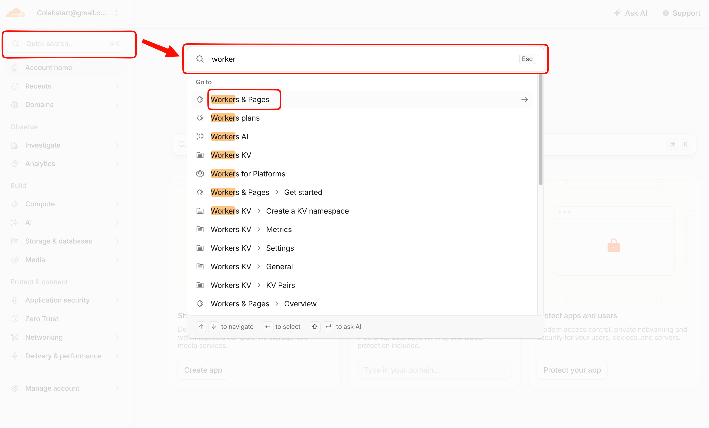
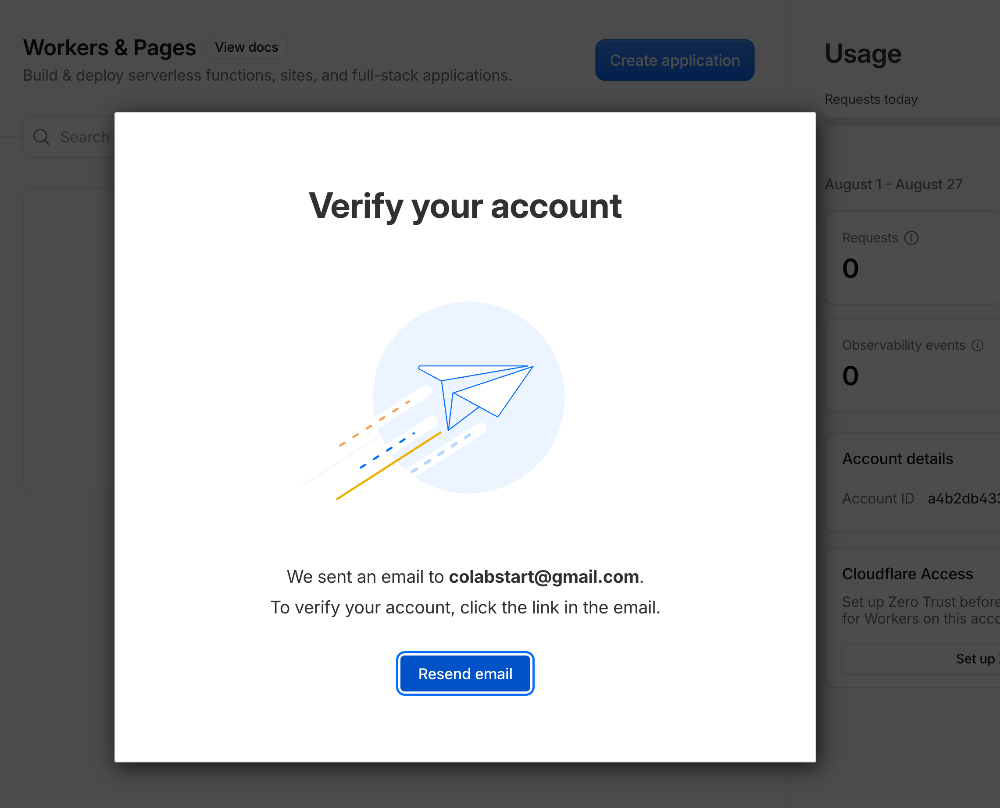
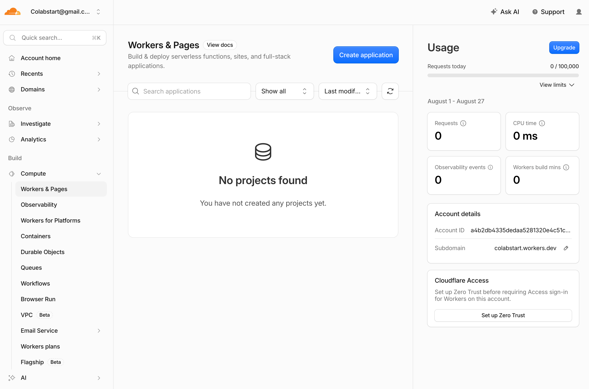
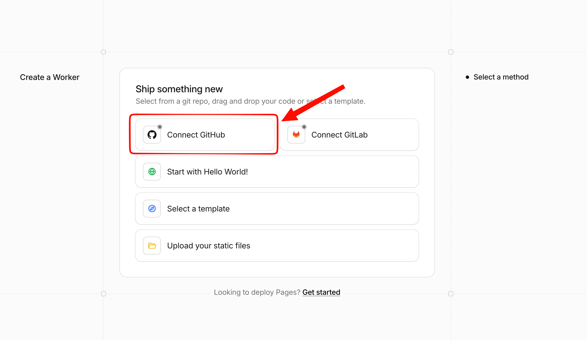
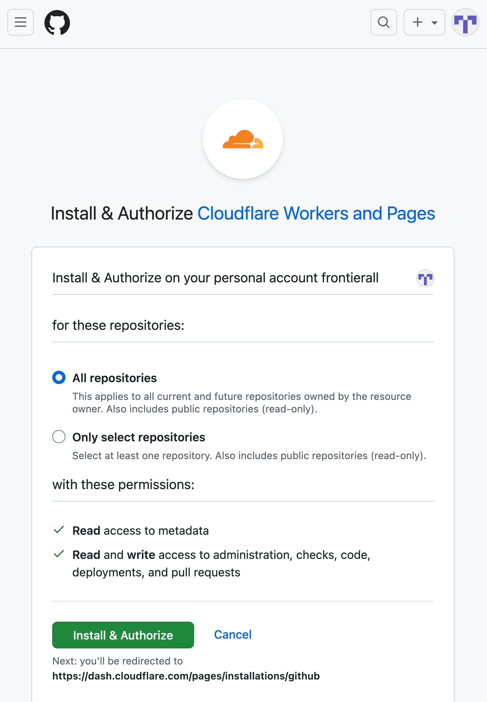
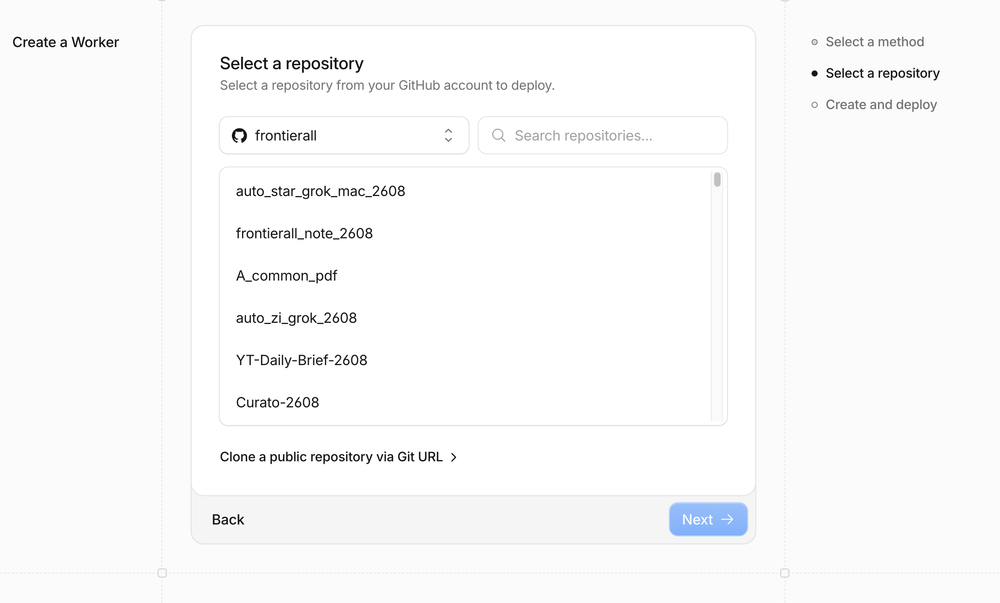
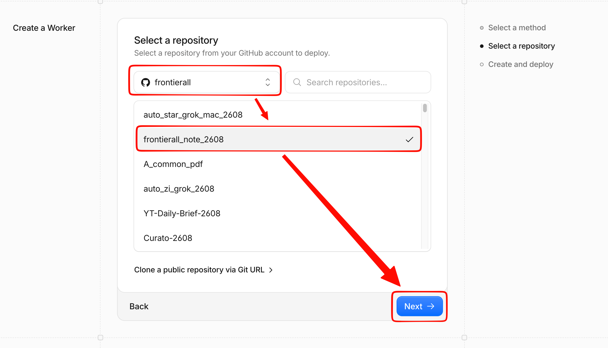
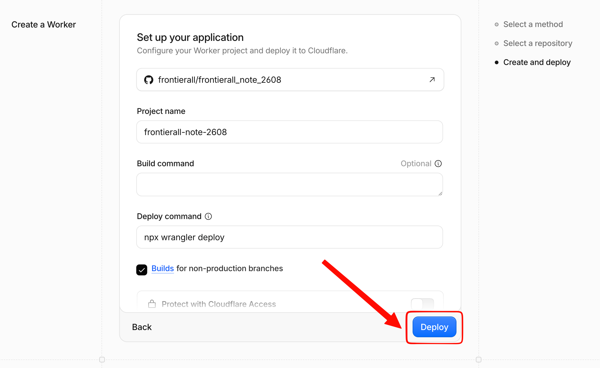
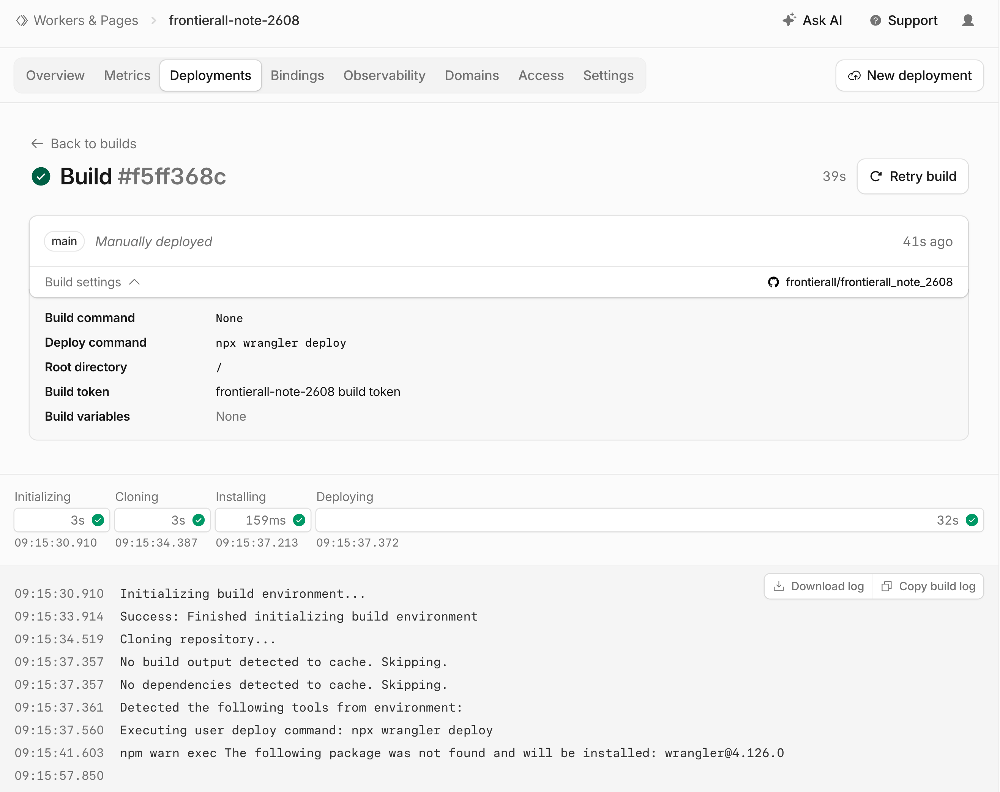

Cloudflare Workers로 정적 사이트 배포하기
이 강의 노트 저장소(frontierall_note_2608)를 GitHub Pages 대신 Cloudflare Workers에도 배포해 보면서 실제로 거친 화면 흐름을 그대로 정리한 자료입니다. 최근 Cloudflare 대시보드는 "Pages"라는 별도 메뉴 대신, 정적 사이트도 Workers 하나로 통합해서 배포하도록 안내합니다. 그 과정에서 실제로 겪은 시행착오(빌드 실패, 이름 변경이 안 먹힌 문제)도 함께 다룹니다.
- 순수 정적 HTML 저장소를 Cloudflare Workers에 Git 연동으로 배포하기
- 배포에 꼭 필요한
wrangler.jsonc설정 파일 만들기 - GitHub 저장소가 private으로 바뀌어도 계속 자동 배포가 되는 이유
- 배포된 Worker의 이름·주소(서브도메인)를 바꿀 때 헷갈리는 지점
1. 왜 Cloudflare Workers인가
GitHub Pages는 무료 플랜에서 private 저장소를 지원하지 않습니다. 강의 자료에 민감한 스크린샷이나 비공개 참고자료가 섞이기 시작하면, 저장소를 private으로 두고 싶어지는데 그러면 GitHub Pages가 꺼져버립니다. Cloudflare Workers(옛 Cloudflare Pages)는 private 저장소를 그대로 연결해도 배포가 계속되기 때문에, "소스는 비공개, 결과물만 공개"가 가능합니다.
2. 저장소에 배포 설정 파일 먼저 추가하기
Cloudflare 대시보드에서 저장소를 연결하면 기본 배포 명령으로 npx wrangler deploy가 실행됩니다. 이 명령이 "어떤 폴더를 정적 사이트로 서빙할지" 알려면 저장소 루트에 wrangler 설정 파일이 있어야 합니다. 순수 HTML 저장소라 package.json도 없고 빌드 과정도 없으므로, 아래처럼 최소한의 설정만 추가하면 됩니다.
// wrangler.jsonc (저장소 루트)
{
"name": "ai-note",
"compatibility_date": "2026-08-27",
"assets": {
"directory": "./"
}
}assets.directory가 "./"이면 저장소 루트 전체를 그대로 정적 파일로 서빙합니다. 이 파일이 없으면 뒤에서 볼 배포 단계가 실패합니다.
실전 트러블슈팅: 이 설정 파일을 넣기 전에 먼저 배포를 시도했다면, "Deploy" 버튼을 눌러도
wrangler가 무엇을 배포해야 할지 몰라 실패했을 겁니다. Git 연동을 시작하기 전에 이 파일부터 커밋·push해 두는 것이 안전합니다.
3. Cloudflare 대시보드에서 Workers 메뉴 찾기
dash.cloudflare.com에 로그인하면 나오는 첫 화면입니다. 예전에는 왼쪽에 "Workers & Pages"라는 메뉴가 바로 보였는데, 최근 개편으로 Build → Compute 안으로 들어갔습니다.

Cloudflare 대시보드 첫 화면
메뉴를 찾아 클릭하는 것보다, 상단 검색창(⌘K)에 worker라고 치는 게 더 빠릅니다.

⌘K 검색 → Workers & Pages
4. 계정 이메일 인증
계정이 아직 이메일 인증 전이면 애플리케이션 생성 자체가 막힙니다. 가입 시 사용한 이메일로 온 인증 메일의 링크를 눌러야 다음 단계로 넘어갈 수 있습니다.

이메일 인증 전에는 배포를 시작할 수 없다
5. 애플리케이션 만들기 → GitHub 연결
인증이 끝나면 Workers & Pages 화면에 프로젝트가 하나도 없는 상태로 열립니다. 우측 상단 Create application을 누릅니다.

Workers & Pages — 아직 프로젝트 없음
다음 화면에서 Connect GitHub를 선택합니다. (화면 하단에 "Looking to deploy Pages? Get started"라는 링크도 있는데, 지금은 이 통합된 Worker 플로우로도 정적 사이트 배포가 그대로 됩니다.)

Connect GitHub 선택
5-1. GitHub 앱 권한 승인
GitHub 인증 창이 뜨면 Cloudflare Workers and Pages 앱을 설치·승인합니다. 저장소를 하나씩 관리하고 싶다면 Only select repositories를 선택해 필요한 저장소만 고를 수 있습니다.

GitHub에서 Cloudflare 앱 권한 승인
5-2. 저장소 선택
승인이 끝나면 Cloudflare 쪽으로 돌아와 계정의 저장소 목록이 뜹니다. 배포할 저장소를 찾아 선택합니다.

GitHub 계정의 저장소 목록에서 선택

저장소 선택 완료 → Next
5-3. 빌드 설정
마지막 단계에서 프로젝트 이름과 명령어를 확인합니다.
- Project name — 이 이름이 그대로 배포 주소(
<이름>.<계정 서브도메인>.workers.dev)가 됩니다. 신중하게 정합니다. - Build command — 빌드 과정이 없는 순수 정적 사이트라 비워둡니다.
- Deploy command —
npx wrangler deploy(기본값 그대로). 저장소에wrangler.jsonc가 있어야 이 명령이 성공합니다.

Project name · Build command · Deploy command 확인 후 Deploy
실전 트러블슈팅 — 이름은 나중에 못 바꾼다: 여기서 정한 Project name은 이후에 바꿀 수 없습니다. 저장소의
wrangler.jsonc에 있는"name"값을 나중에 수정해서 push해도, 이미 연결된 프로젝트는 처음 이름과 주소를 그대로 유지한 채 재배포만 됩니다. 이름을 바꾸고 싶다면 Settings 탭에서 변경 기능을 먼저 찾아보고, 없다면 프로젝트를 삭제한 뒤 원하는 이름으로 처음부터 다시 만들어야 합니다. 짧고 최종적인 이름을 미리 정해 두고 시작하는 것이 가장 편합니다.
6. 배포 확인
Deploy를 누르면 Initializing → Cloning → Installing → Deploying 네 단계가 순서대로 진행되고, 로그에서 wrangler가 설치되어 실제 배포까지 수행하는 것을 볼 수 있습니다.

배포 성공 — 4단계 모두 완료
배포가 끝나면 Domains 탭에서 <프로젝트명>.<계정 서브도메인>.workers.dev 형태의 기본 주소를 확인할 수 있습니다. 이후로는 main 브랜치에 push할 때마다 이 GitHub 연동이 자동으로 재배포합니다.
7. 참고 — 용량·서브도메인
| 항목 | 무료 플랜 기준 |
|---|---|
| 파일 1개 최대 크기 | 25 MiB (이미지·PDF 등 종류 구분 없음) |
| 사이트 전체 파일 개수 | 최대 20,000개 |
| 월 빌드 시간 | 3,000분(대시보드 Usage 패널에서 실시간 확인 가능) |
*.workers.dev 주소는 항상 <Worker 이름>.<계정 서브도메인>.workers.dev 두 라벨 구조라, 라벨 하나만 남기는 것은 불가능합니다. 계정 서브도메인(위 예시의 colabstart)은 Workers & Pages 개요 화면의 Account details 카드에서 연필 아이콘을 눌러 바꿀 수 있는데, 이 계정에 있는 모든 Worker 주소에 한꺼번에 영향을 준다는 점을 알고 진행합니다.